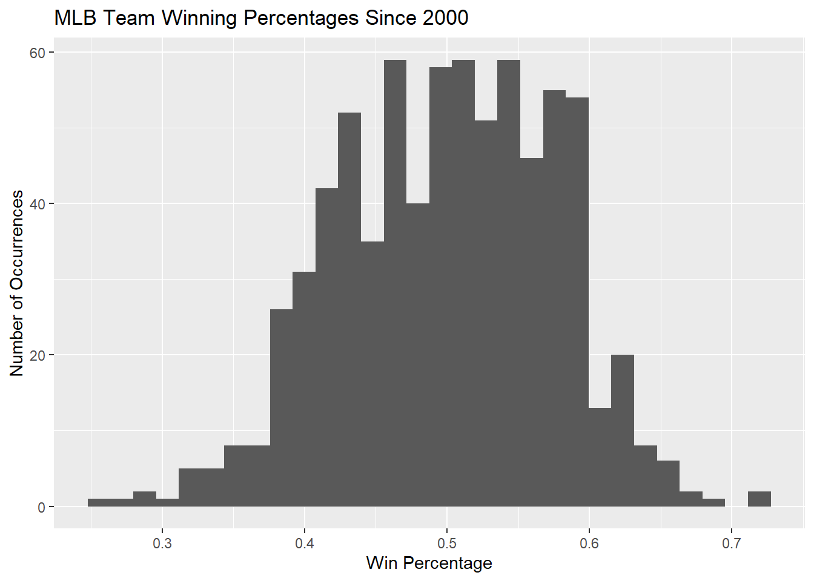

P_A = 0.55
P_B = 0.48
P_A_wins = (P_A / (1 - P_A)) / ((P_A / (1 - P_A)) + (P_B / (1 - P_B)))
P_B_wins = (P_B / (1 - P_B)) / ((P_B / (1 - P_B)) + (P_A / (1 - P_A)))
P_A_wins[1] 0.5697211Simulating Baseball: Part II
In the last lesson, we simulated the number of runs in a half-inning by modeling individual at-bats and state transitions. Now we’re going to simulate a whole season. Instead of simulating each at-bat, we’ll start our simulation efforts at the level of modeling individual game outcomes.
Let’s come up with some ideas for deciding how to predict the winner of a game.
The Bradley-Terry model states the probability of Team A winning against Team B with this logistic function:
\[P(A\text{ wins}) = \frac{\text{exp}(T_A)}{\text{exp}(T_A) + \text{exp}(T_B)}\]
where \(T_A\) and \(T_B\) are the talent levels associated with Teams A and B, respectively. Now consider a different formulation provided by Bill James in the early 1980s:
\[P(A\text{ wins}) = \frac{P_A/(1-P_A)}{P_A/(1-P_A) + P_B/(1-P_B)}\]
where \(P_A\) and \(P_B\) are the winning percentages of Teams A and B, respectively. How are these models related?
So who wins in a game between Team A and B? Let Team A have \(P_A = 0.55\) and Team B have \(P_B = 0.48\). (Note: These don’t have to add to 1!)
[1] 0.5697211Great, Team A wins with probability 0.57. Unfortunately, we don’t need a probability of winning – we need a winner! How can we produce a winner by knowing that Team A is expected to win with probability 0.57?
Here are two ways we might think about declaring a winner.
[1] 0.4489612[1] "Team A wins!"[1] "Team A wins!"These happen to agree this time, but there’s no requirement for that to be the case. We effectively flipped two coins here and could have gotten different outcomes.
If we’re going to simulate a season, we first need to create a schedule. Suppose there were three teams (A, B, and C), and every team plays every team once at home and once away.
A vs. B @ A
A vs. B @ B
A vs. C @ A
A vs. C @ C
B vs. C @ B
B vs. C @ C
library(tidyverse)
library(Lahman)
library(knitr)
teams <- c("A", "B", "C")
k = 1 # number of times each team hosts each other team
num_teams <- length(teams)
Home <- rep(rep(teams, each = num_teams), k)
Visitor <- rep(rep(teams, num_teams), k)
tibble(Home = Home, Visitor = Visitor) |>
filter(Home != Visitor) |>
kable()| Home | Visitor |
|---|---|
| A | B |
| A | C |
| B | A |
| B | C |
| C | A |
| C | B |
Since we have code for a valid schedule for three teams playing each other once at home and once away, we can feel good about extending this to more complicated seasons with more teams and more games between pairs of teams. Suppose we have 20 teams, each playing every other team three times each, both at home and away. That should be:
\[\frac{20\text{ teams} \times 19\text{ opponents} \times 6\text{ games per pair of teams}}{2\text{ teams per game}} = 1140\text{ games}\]
[1] 1140Let’s consider the win-loss records of the last ~20 years. There will be some amazing teams and some not-so-hot teams.

[1] yearID lgID teamID franchID divID
[6] Rank G Ghome W L
[11] DivWin WCWin LgWin WSWin R
[16] AB H X2B X3B HR
[21] BB SO SB CS HBP
[26] SF RA ER ERA CG
[31] SHO SV IPouts HA HRA
[36] BBA SOA E DP FP
[41] name park attendance BPF PPF
[46] teamIDBR teamIDlahman45 teamIDretro
<0 rows> (or 0-length row.names)Let’s sample 20 winning percentages from these historic teams to serve as the “talent” level of the teams in our simulated league.
[1] 0.562 0.599 0.494 0.519 0.481 0.549 0.506 0.432 0.494 0.512 0.475 0.483
[13] 0.611 0.586 0.494 0.512 0.556 0.519 0.562 0.552Now we need to assign talent scores to our 20 teams.
| Home | Visitor | talent_home | talent_visitor |
|---|---|---|---|
| A | B | 0.562 | 0.599 |
| A | C | 0.562 | 0.494 |
| A | D | 0.562 | 0.519 |
| A | E | 0.562 | 0.481 |
| A | F | 0.562 | 0.549 |
| A | G | 0.562 | 0.506 |
Let’s add the probability that the home team wins using Bill James’ formula:
Finally, we’re ready to determine game winners.
| Home | Visitor | talent_home | talent_visitor | P_Home_wins | Winner |
|---|---|---|---|---|---|
| A | B | 0.562 | 0.599 | 0.462 | A |
| A | C | 0.562 | 0.494 | 0.568 | C |
| A | D | 0.562 | 0.519 | 0.543 | D |
| A | E | 0.562 | 0.481 | 0.580 | A |
| A | F | 0.562 | 0.549 | 0.512 | F |
| A | G | 0.562 | 0.506 | 0.556 | G |
| Team | Wins |
|---|---|
| P | 74 |
| M | 69 |
| B | 68 |
| S | 66 |
| A | 64 |
| F | 64 |
| R | 63 |
| J | 61 |
| D | 59 |
| C | 55 |
| Q | 54 |
| O | 53 |
| N | 52 |
| I | 52 |
| T | 51 |
| E | 49 |
| L | 48 |
| G | 47 |
| H | 46 |
| K | 45 |
How do the season results align with the original talent rankings? Did any teams significantly beat or fail to live up to expectations?
| Team | Talent | Wins | Talent Rank | League Rank |
|---|---|---|---|---|
| P | 0.512 | 74 | 12 | 1 |
| M | 0.611 | 69 | 1 | 2 |
| B | 0.599 | 68 | 2 | 3 |
| S | 0.562 | 66 | 5 | 4 |
| A | 0.562 | 64 | 4 | 5 |
| F | 0.549 | 64 | 8 | 6 |
| R | 0.519 | 63 | 10 | 7 |
| J | 0.512 | 61 | 11 | 8 |
| D | 0.519 | 59 | 9 | 9 |
| C | 0.494 | 55 | 14 | 10 |
| Q | 0.556 | 54 | 6 | 11 |
| O | 0.494 | 53 | 16 | 12 |
| N | 0.586 | 52 | 3 | 13 |
| I | 0.494 | 52 | 15 | 14 |
| T | 0.552 | 51 | 7 | 15 |
| E | 0.481 | 49 | 18 | 16 |
| L | 0.483 | 48 | 17 | 17 |
| G | 0.506 | 47 | 13 | 18 |
| H | 0.432 | 46 | 20 | 19 |
| K | 0.475 | 45 | 19 | 20 |
Model the probabilistic event(s). In our case, this was the outcome of a single game based on two teams’ talent levels.
Replicate every feature of the system, pipeline, process, etc., as closely as possible to reality.
Repeat the simulation hundreds or thousands of times to observe the long-run behavior of the system.
[1] "2" "3" "4" "5" "6" "7" "8" "9" "10" "J" "Q" "K" "A" "2" "3"
[16] "4" "5" "6" "7" "8" "9" "10" "J" "Q" "K" "A" "2" "3" "4" "5"
[31] "6" "7" "8" "9" "10" "J" "Q" "K" "A" "2" "3" "4" "5" "6" "7"
[46] "8" "9" "10" "J" "Q" "K" "A" [1] 2 3 4 5 6 7 8 9 10 10 10 10 1 2 3 4 5 6 7 8 9 10 10 10 10
[26] 1 2 3 4 5 6 7 8 9 10 10 10 10 1 2 3 4 5 6 7 8 9 10 10 10
[51] 10 1